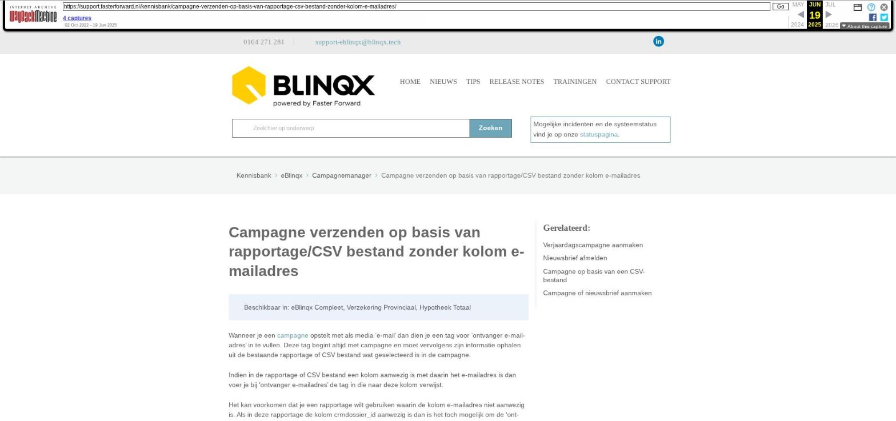

Campagne verzenden op basis van rapportage/CSV bestand zonder kolom e-mailadres

Tekstinhoud
Campagne verzenden op basis van rapportage/CSV bestand zonder kolom e-mailadres
Beschikbaar in: eBlinqx Compleet, Verzekering Provinciaal, Hypotheek Totaal
Wanneer je een campagne opstelt met als media 'e-mail' dan dien je een tag voor 'ontvanger e-mailadres' in te vullen. Deze tag begint altijd met campagne en moet vervolgens zijn informatie ophalen uit de bestaande rapportage of CSV bestand wat geselecteerd is in de campagne.
Indien in de rapportage of CSV bestand een kolom aanwezig is met daarin het e-mailadres is dan voer je bij 'ontvanger e-mailadres' de tag in die naar deze kolom verwijst.
Het kan voorkomen dat je een rapportage wilt gebruiken waarin de kolom e-mailadres niet aanwezig is. Als in deze rapportage de kolom crmdossier_id aanwezig is dan is het toch mogelijk om de 'ontvanger e-mailadres' met een tag te vullen. Dit doe je als volgt:
In de campagnemanager ga je naar de betreffende actie en dan naar 'ontvanger e-mail'. Hier klik je op het 'insert tags icoon' Dan klik je op het volgende:
Velden: campagne
Velden: campagne –> dossier
Velden: campagne –> dossier –> eerste persoon
Velden: campagne –> dossier –> eerste persoon –> emailadressen
Velden: campagne –> dossier –> eerste persoon –> emailadressen –> emailadres
Tag: campagne –> dossier –> eerste persoon –> emailadressen –> emailadres –> adres
Op deze manier wordt de e-mail verzonden naar alle eerste personen uit de dossiers die in de selectie naar voren komen. Indien gewenst kan je op deze manier ook kiezen voor tweede persoon om zo ook de e-mail naar de tweede persoon in het dossier te sturen.
Laatste update: 21 mei 2024
Was deze informatie nuttig?
Ja Nee